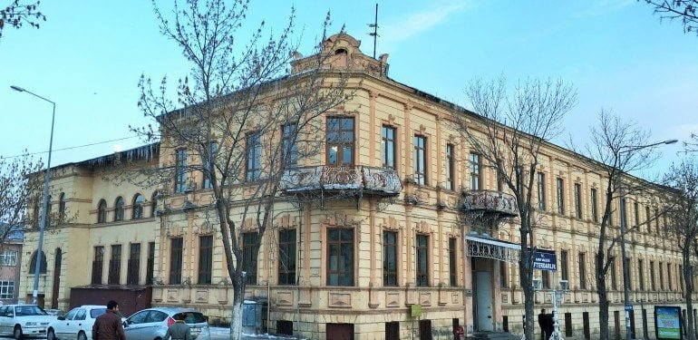
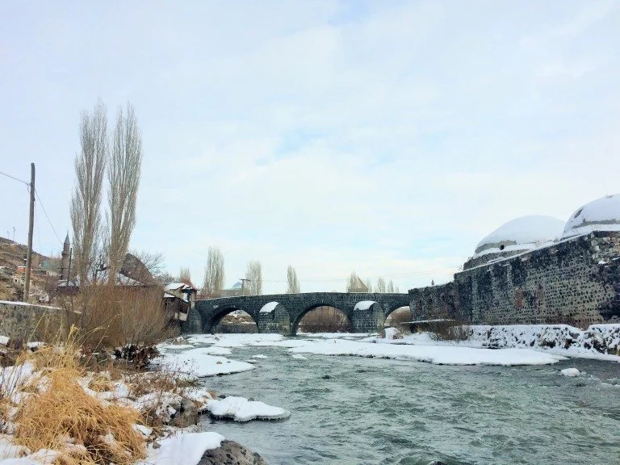
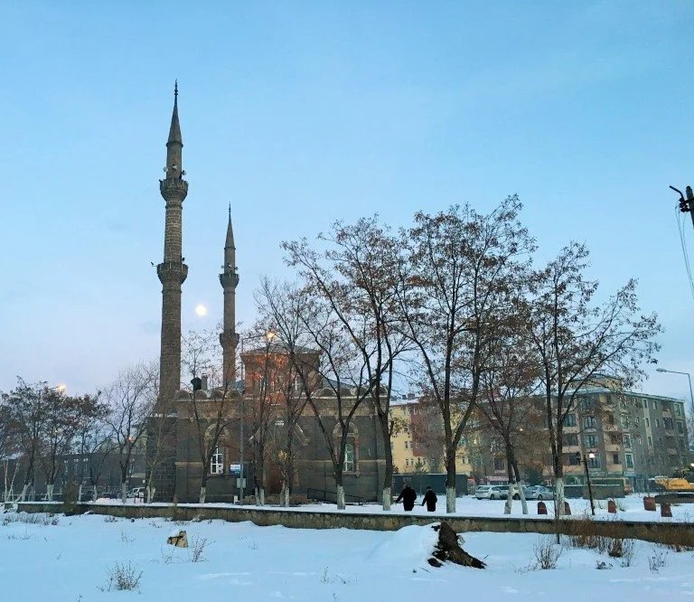

KARS’IN KİMLİĞİ VE TARİHİ
Kars Doğu ile Batı arasında sınırda yer alan ve Anadolu’ya açılan bir kapı olarak görüldüğü için, Urartular, Selçuklular, Ermeniler ve Osmanlılar döneminden beri ismi de kapı anlamına gelen Kars olmuş.
Kars aslında bir ‘Serhat Kenti’. Sınırda stratejik konumu sebebi ile sürekli savaşlar görmüş. 1200 – 1450 yılları arasında Moğollar, 1600 – 1700 yılları arasında İran – Sasani, 1800’lerin başında ve ortasında Rusların saldırısına uğramış. Bu sebeple hep bir asker kenti, paşalar şehri olmuş.
Hatta çektiği bütün acılar ve zulümlar sebebi ile ilk ‘Gazi’ ünvanı alan ve madalyası olan kentimiz Kars olmuş. Kars geçirdiği tüm savaşlara, depremlere, yangınlara ve yağmalara direnerek bu zor günleri geride bırakmış, geçmişini kültürünün bir parçası yapmayı başarmış.
Osmanlı, Rus ve Ermeni mimarilerinin çok güzel örneklerini bir arada görebildiğiniz ender şehirlerden birisi olan Kars, farklı etnik kültürleri uyumla içinde barındırmayı başarabilmiş. Yani zengin bir kültürel hazineye sahip olan Kars için Doğu’daki en batılı şehir diyebiliriz.
80.000 kişilik nüfusunun 15.000’i öğrenci olan kentin eğitim seviyesi çok yüksek.
Sanata önem veren şehirde yer alan konservatuar Türkiye’nin önemli konservatuarlarından. Yani Kars bir müzik, dans ve edebiyat şehri.
Kars ayrıca bir portreler şehri. Rus yazar Puşkin 1829 da Kars’a gelir ve şehirden büyülenir. Şehrin hatıralarında bıraktığı izleri ve özellikle çok etkilendiği hamamı, eşine yazdığı mektuplarda anlatır. Hz. Mevlana’nın Mesnevi’de kendisinden ‘Şeyh-i Din’ olarak bahsettiği ve Anadolu’nun fethine
büyük katkılar sağlayan 11. Yüzyılın tasavvuf alimlerinden Hasan El Harakani’nin de memleketi Kars. Namık Kemal’in dizelerine ve Orhan Pamuk’un satırlarına ilham vermiş Kars’ı Cemal Süreyya, ‘beyaz, uykusuz ve uzakta’ diye niteler. Reha Erdem’in Kozmos’undan Murat Saraçoğlu’nun ‘Deli Deli Olma’sına
birçok filme de ilham verip neredeyse başrol oyunculuğu yapmış Kars.

KARS TARİHİ
Kars’ın tarihi 5000 yıl öncesine uzanıyor. Anadolu MÖ 9 ve 6. Yüzyıllar arasında Urartular döneminde altın çağını yaşarken Kars’ta medeniyetin ilk izleri atılmış. Hatta Van, Tuşpa yöresindeki Çavuştepe – Gavaş arasında 2800 yıl önce inşaa edilmiş su kanalları hala işlevsel. Ardından yöreye Persler gelmiş ve Anadolu’yu bir eyaleti haline getimiş. Ardından Büyük İskender’in Helenistik dönemi başlamış.
MÖ 1.yüzyılda 2. Tigyan Kars’ı da kapsayan bölgede Lübnan’dan Kapadokya’ya uzanan büyük Ermeni krallığını kurar. Ardından Roma Avrupa’da hüküm süren kıtlıktan kurtulmak için Anadolu’ya gelir, ve yörenin verimliliğine hayran kalarak ‘Asya Minör’ adını verir, adım adım Anadolyu fetheder ve Ermeni krallığının önünü keser. Roma 4, 5 ve 6. yüzyıllarda bölgedeki Ermenileri kontrol altında tutar. Ancak Pers kavmi olan Sarsaniler bölgeye saldırır ve yöre bir dönem Ermeniler bir dönem Perslerin egemenliğine girer. 7. yüzyıldan sonra Emeviler, sonra Abbasiler bu coğrafyayı yönetir.
Ardından yine Ermenilerin hakimiyeti başlar. Ve 10-11 yüzyıllarda Ermenilerin hakimiyetinde bölge altın çağını yaşar. ‘Binbir kiliseli şehir’ Ani inşaa edilir ve başkent Kars’tan Ani’ye taşınır. İhtişamlı mimari harikaları ortaya çıkar. (Bu arada Ermeniler kendilerine Hay diyor ve ülkelerinin adı da Hayastan, ancak onlara Ermenistan diyen Persler).
Daha sonra Kars ve civarı, 1058’de Selçuklu, 1124’te Gürcüler, 1153’te Saltukoğulları’nın, 1239’da Moğollar’ın, ardından İlhanlılar, Celâyirliler, Tîmûrlular, Karakoyunlular, Akkoyunlular ve Safevîler’in ve de 1534’te Kânûnî Sultan Süleyman Han döneminde Osmanlıların hakimiyetine geçer.
16.yüzyılda Kars Osmanlılar’ın önemli bir askerî bir üssü ve serhat şehri olur. Selçuklular döneminde temelleri atılan Kars Kalesi ve surları onarılır ve güçlendirilir, birçok camii, hamam ve köprü inşaa edilir.
1877-1918 yılları arasında ise Kars Rusların egemenliği altına girer. Ruslar Anadolu’ya açılan kapı olarak gördükleri için büyük önem verirler Kars’a. Ve Hollanda’dan getirdikleri mimarlar ile yepyeni bir şehir inşaa ederler. Izgara planlı, birbirine paralel ve kesen geniş caddeler üzerinde harika taş binalar yapılır.
1918 başında Osmanlı ve müttefiklerine yenilen Rusya, silâhlarını bırakıp, Brest-litovsk Antlaşması ile Kars’ı Osmanlı Devletine terk eder. Ve bu dönemde, ömrü 8 ay sürecek Cenubi Garbi Kafkas Demokratik Cumhuriyeti kurulur, ancak savaş sonrası yöre ingilizler’in himayesine girmiştir ve İngiliz askerler meclisi basıp dağıtarak bu demokratik girişimi sonlandırırlar.
Kurtuşul Savaşı sırasında 15’inci Kolordu Komutanı Kâzım Karabekir Paşa, 30 Ekim 1920’de Kars’ı kurtarır ve Kars Kalesine Türk Bayrağı çekilir. 16 Mart 1921 Moskova Antlaşması ile Kars Türkiye’ye iade edilir.

KARS TARİHİNDE SOLAN BİR ÇİÇEK : MOLOKANLAR
Molokanlar, Rus Ortodoks’lardan kopan, kendilerini ‘Ruhani Hristiyanlar’ olarak tanımlayan bir topluluk. Kilise gibi ibadet sembolleri olmayan, tanrı ile kul arasına kimse giremez diyerek ruhban sınıfına karşı çıkan, doğruluk, dürüstlük, kardeşlik, yardımseverlik, çalmamak, yıkmamak, kıskanmamak, düşkün ve fakire yardım etmek, mal mülke değer vermemek, gibi ilkeleri benimsemiş, savaş karşıtı bir topluluk. (Ruslar gibi süt içmeme prensibine uymadığı için ‘Süt sever’ yani ‘Molok an’ ismini almışlar.)
Rus Çarlığı, kiliseye karşı çıkarak kendi ibadet ve yaşam biçimlerini uyguladığı için, Molokanlar’a katı yaptırımlar uygulamış ve onları dünyanın dört bir köşesine sürgün etmiş. Molokonlar ise savaş karşıtlıklarını koruyarak, yerleştikleri bölgelerde tarım ve hayvancılık bilgilerini uygulayarak, hem ayakta kalmayı hem de yöre halkı ile bilgilerini paylaşıp, gittikleri yoksul bölgelerin kalkınmasına katkıda bulunmayı başarmışlar. Bu sebeple gittikleri yörelerde çok sevilmişler.
Çarlık döneminde bir kısım Molokan, Kafkasların geniş ovalarında Kars, Ardahan, Iğdır civarına sürülmüşler. Kars civarında Çakmak, Çalkavır, Zehrap ve Atçılar köylerinde ve Kars merkezinde yoğun olarak yerleşmişler. Kars’ta bölge halkına peynircilik, değirmencilik, bahçe ziraati öğretip, halkı arıcılık, hayvancılık ve tarımda modern teknikler ile tanıştırmışlar. Yöre topraklarını patates ve lahana ile ilk onlar tanıştırmış. Değirmenler kurmuşlar. Semaveri bu yörelere onlar taşımışlar. Yöre halkı ile uyum, barış ve dostluk içinde sağlıklı ilişkiler kurmuşlar.
I.Dünya Savaşı sonrası Kars Osmanlı’ya devredildiğinde ve Rus orduları Kars ve yöresinden çekilince, Molokanlar ve Türkler bağımsızlık ve özgürlük arayışı içinde, birlikte Cenubi Garbi Kafkas Demokratik Cumhuriyeti’ni kurmuş. Anadolu topraklarındaki ilk demokratik oluşum olan bu cumhuriyet, Osmanlı da harbi kaybedip, yöre İngiliz işgaline uğrayınca, ortadan kaldırılmış.
Kurtuluş Savaşı sırasında Kars 1920 Eylül’de İngilizlerden kurtarılmış, ancak yörede yaşayan Molokan halkı Rus kimlikleri ve Bolşovik kökenleri sebebi ile hoş görülmeyip savaşa asker olarak çağrılmış.
Hiç savaşmayan ve barışçıl inançlarının tümüne karşı düşen bu zorlama, Molokanlar tarafından tepki ve itirazlar ile karşılanmış. Askerlik görevi onların yaşam felsefelerine tam tersti. Amacı Bolşovik eğiliminden kuşkulanılan Molokanları geldikleri topraklara geri dönmeye mecbur bırakmak olan zorlama başarıya ulaşmış ve 1922’de Molokanların çoğu Rusya’ya göçmüş. Kalan az sayıda Molokan ise 1960’da göç etmek zorunda kalmış. Bölgeye demokrasi, medeniyet, kardeşlik, barış rüzgarları getiren Molokanlar’ı kaybetmek derin dostlukların solmasına, ve etnik zenginliğimiz için büyük kayıplar yaşanmasına sebep olmuş.